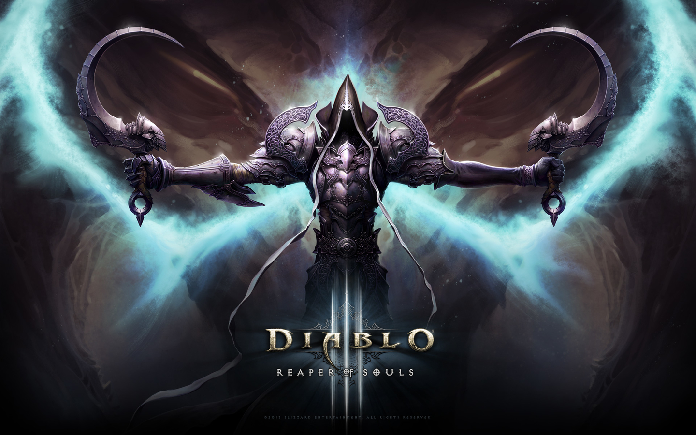
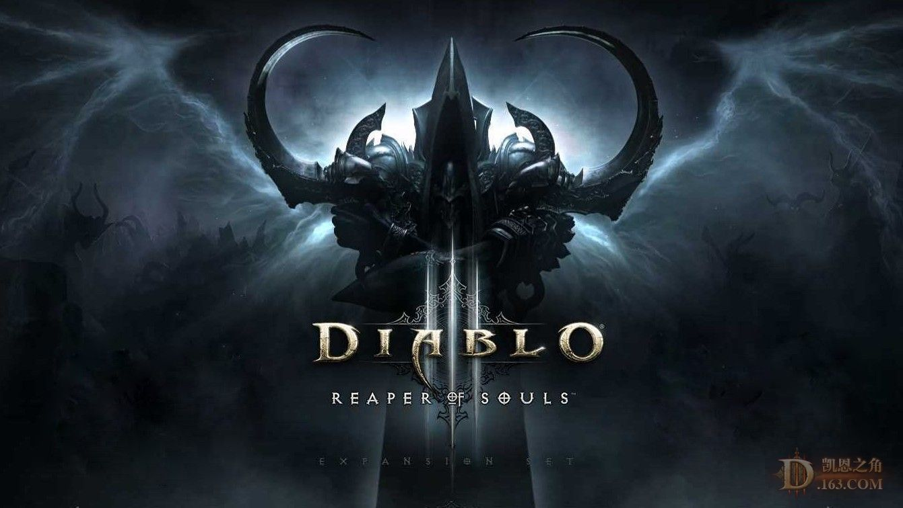

 
《暗黑破坏神》是1996年暴雪公司推出的一款动作RPG经典游戏，英文名Diablo，源于西班牙语，意为魔王、恶魔的意思。2000年《暗黑破坏神2》上市，《暗黑破坏神3》现在也已发行。游戏中，所有主角的动作操控，以及界面的设定，全部均可由一支鼠标负责，游戏画面以六十度倾斜的方式表现出来，游戏所有的场景全以即时的立体投影方式表现出来，除了有明暗的效果外，人物的移动效果也极为流畅，魔法的表现亦是一绝。游戏中还有数量极多的武器、防具和道具。
《暗黑破坏神3》是著名动作角色扮演游戏《暗黑破坏神2》的续作，游戏故事发生于《暗黑破坏神2》的20年之后一个黑暗的魔幻世界：神圣之殿。玩家可以在五种不同的职业中进行选择，每种职业都有一套独特的魔法和技能。玩家在冒险中可以体验丰富多样的设置、感受史诗般的故事情节，挑战无以计数的恶魔、怪物和强大的BOSS，逐渐累积经验，增强能力，并且获得具有神奇力量的物品。
| 巫医 | 巫医是召唤亡灵和邪恶生物来为他们而战的灵魂战士。他们的身边满是僵尸和毒虫，巫医可以随意使用会爆炸的颅骨，流淌酸毒的云雾和可怕的诅咒来攻击他们的敌人。 |
| 武僧 | 武僧是通过纯粹意志力量掌控神授之力的神圣武士。治疗波、守护真言以及神圣攻击都是他们所掌握的高超技巧。 熟练的武僧可以赤手空拳或者装备各式均衡的武器打出迅捷的攻击。在战斗中，他们强调高机动性高耐久力，在近战中游刃有余而避免陷入持久的肉搏战中。 |
| 猎魔人 | 猎魔人是无情的复仇者，任何被盯上的目标都会瞬间被她们从远处狙杀。她们会远离危险，并依靠手里的弓弩、致命的陷阱和弹幕将这个世界上任何可憎的生物全部消灭。 |
| 野蛮人 | 野蛮人--他是文明边缘的几个部落中的成员，他拒绝一切看起来温柔和软弱的事物的影响。在部落之间不间断的战争中使他能够活下来得益于他那野蛮人的坚定意志和强健的体格。虽然他缺乏文明人的心计，但是他能够敏锐的感觉他周围的环境，因为这一切来自他动物般的直觉，这使野蛮人让人想起民间关于狼人的一些传说。事实上他们坚信他们能够召唤图腾上的动物的灵魂来鼓舞他们，并得到非凡的力量和能力，不过这些召唤只是改善他那早已完美的战斗技能。 |
| 法师 | 魔法师放弃了多数魔法使用者所认可的安全的方法，是以自己身体作为奥术能量容器的叛逆的施法者。她们操作任何力量来瓦解、点燃或冻住她们的敌人，她们也可以控制时间和光线来传送、创造强大的幻象和折射攻击。 |
网页链接：暗黑破环神三